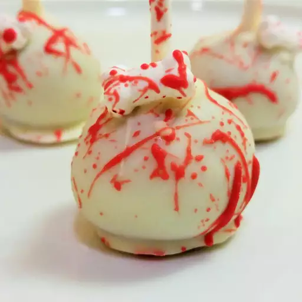

Cake Balls

Description
These cake balls are incredibly delicious. They can be made into cake pops and nicely packaged as gifts. The
recipe variations are unlimited — mix and match the cake, icing, and coating flavors as desired.
Ingredients
- cooking spray
- 1 (15.25 ounce) package chocolate cake mix
- 1 cup water
- 3 large eggs
- ⅓ cup vegetable oil
- 1 (16 ounce) container prepared chocolate frosting
- 1 (3 ounce) bar chocolate flavored confectioners coating
Steps
- Preheat the oven to 350 degrees F (175 degrees C). Grease a 9x13-inch baking dish with cooking spray. Line a
baking tray with waxed paper.
- Blend cake mix, water, eggs, and oil in a large bowl with an electric mixer at low speed until moistened,
about 30 seconds. Beat at medium speed for 2 minutes. Pour batter into the prepared baking dish.
- Bake in the preheated oven until a toothpick inserted into the center of cake comes out clean, 26 to 31
minutes. Let cool enough to handle.
- Crumble warm cake into a large bowl; stir in frosting until well blended. Use a melon baller or small scoop
to form chocolate cake mixture into balls and place them on the prepared baking tray. Place in the freezer
until cake balls are chilled, about 15 minutes.
- Melt chocolate coating in a glass bowl in the microwave or a metal bowl over a pan of simmering water,
stirring occasionally until smooth.
-
Dip cake balls in melted chocolate using a toothpick or fork to hold them. Return to the tray to set.